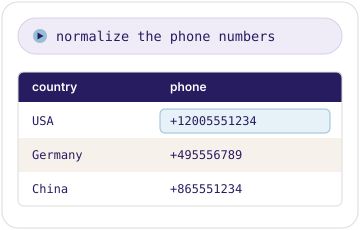
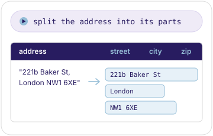
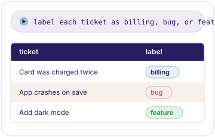
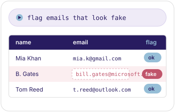
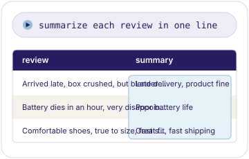
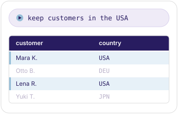
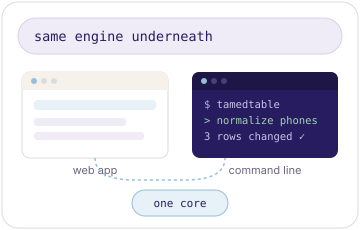

Talk to your data.
Load a spreadsheet, say what you want, and watch it happen. AI ETL — no formulas, no code.
| Name | Phone | Country |
|---|---|---|
| John D. Doe | (200) 555-1234+12005551234 | USA |
| Anna Müller | +49 555 6789+495556789 | Germany |
| 张三 | +86 555 1234+865551234 | China |
Every common data job, in natural language
Reads each row like a person
The AI understands context, so it cleans, enriches, classifies, and validates — things no formula can.
See everything
See changes as they happen. Nothing is hidden: TamedTable is open source, and runs on your own API keys.
Reuse and automate
Every change saves as steps you replay on new data, or export as a Python script. Works in the browser or on the command line.
How it works
Open
A CSV or JSONL, as an URL or a local file.
Say
What you want, in natural language.
Watch
Every row change. Undo anything.
Automate
You just created a recipe, replay it later on new data.
Clean up
Fix messy fields the way a person would — the AI reads each row's context, not just a pattern.

Enrich & extract
Add what isn't there yet — the model fills the gaps and pulls structure out of free text.

Classify
Sort rows by meaning, not keywords — the AI reads what each row is actually about.

Validate
Catch the wrong-looking rows before anyone else does.

Language
Summarize, translate, and detect — across any language, asked in any language.

Deterministic
The everyday spreadsheet jobs are still here — exact, repeatable, no guesswork.

Load, save & reuse
Your work is yours to keep — load from anywhere, save the data or the recipe, undo anything.
